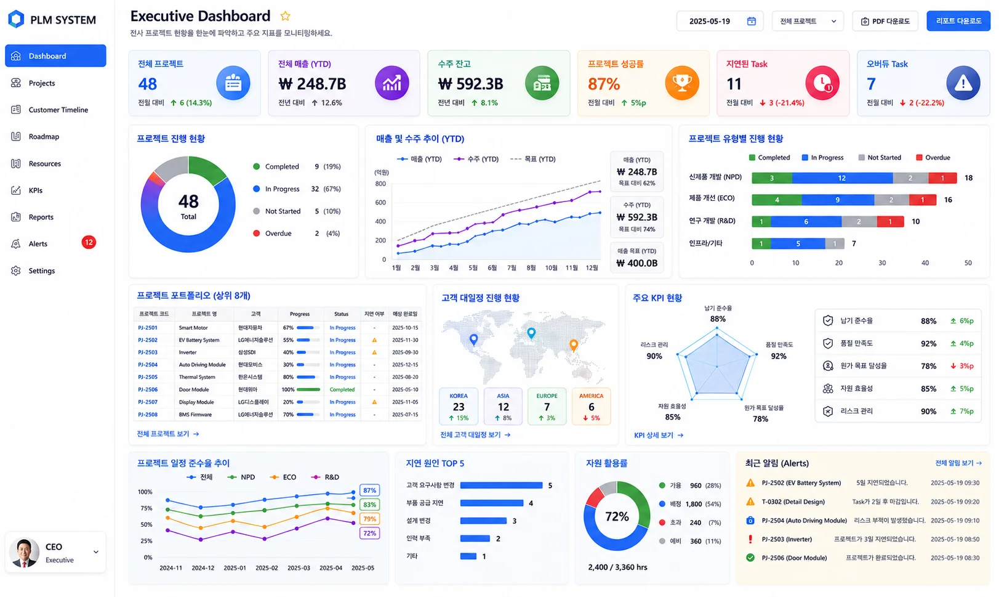
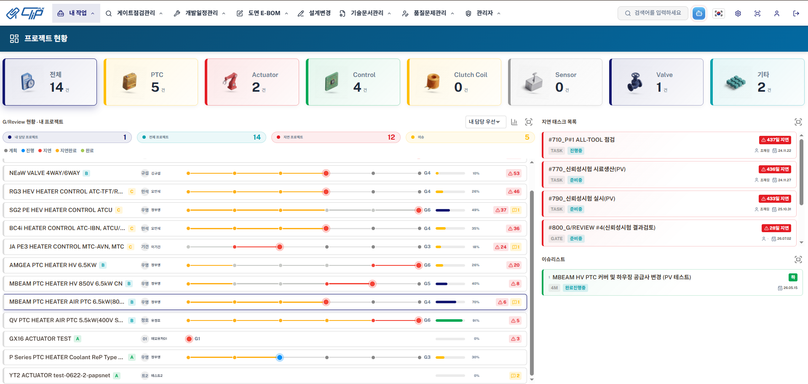
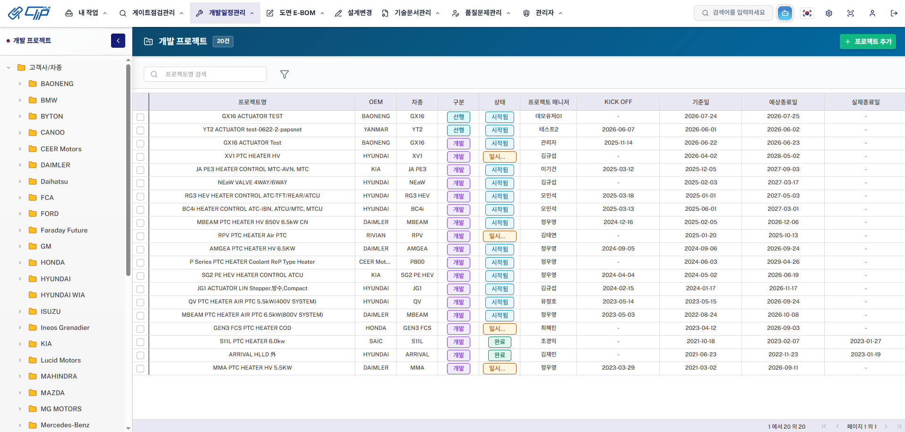
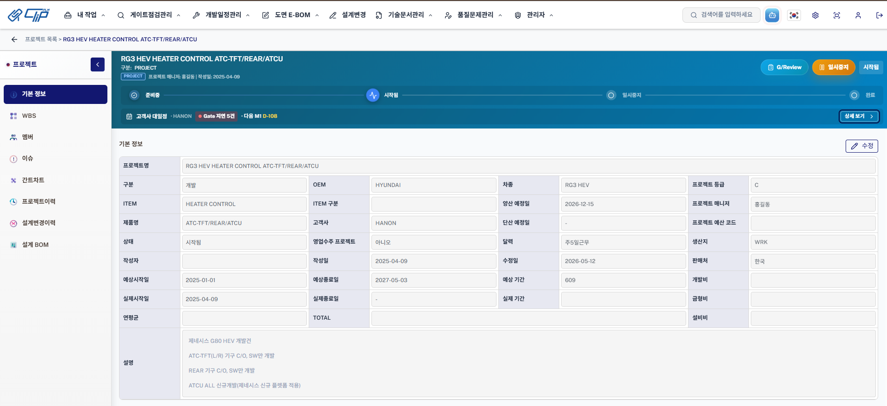

CLIP 2D Viewer · 유사 도면 검색
기준 도면과 닮은 후보 찾기

후보 목록에서 유사도와 도면 형상을 함께 확인할 수 있습니다.
제품의 실제 시연과 팹스넷의 언론 보도, 교육 현장 소식을 전합니다.
SOLIDWORKS·AutoCAD 연동은 PDM에서 확인하세요.
도면 검토, 협력사 배포, 개발 일정도 업무별로 살펴볼 수 있습니다.
기준 도면으로 유사 후보를 찾는 1:N 검색과 개정 전후의 차이를 짚는 1:1 비교를 실제 화면으로 보세요.
SOLIDWORKS에서 신규 품목 11개를 등록한 뒤, 웹 PDM에서 조립품의 L0~L3 구조와 부품 수량을 확인합니다.
CLIP 2D Viewer
CAD 없이 도면을 확인해야 하는 생산·품질·구매 담당자를 위한 Windows·웹 뷰어입니다.
바뀐 위치를 도면 위에서 확인합니다.
이전 작업에서 참고할 도면을 찾습니다.
생산·품질 부서에서 DWG·DXF를 검토합니다.

설계자는 도면 한 장으로 유사 후보를 찾고, 프로젝트 담당자는 질문 한 줄로 관련 프로젝트를 조회합니다.
후보 목록에서 유사도와 도면 형상을 함께 확인할 수 있습니다.
“OEM 프로젝트를 리스트업해줘”라는 질문에 10건이 검색됐고, 첫 화면에 5건이 표시됩니다.
Clip은 설계 변경과 BOM, 프로젝트, 원가 흐름을 연결합니다. 매출·영업이익·생산성을 분석하고 개선하기 위한 일관된 제품 데이터 기반을 만드는 것이 목표입니다.

최신 도면과 리비전을 제품 데이터의 기준으로 관리합니다.
변경된 BOM과 산출물이 프로젝트 일정에 미치는 영향을 이어서 봅니다.
제품과 프로젝트 데이터를 경영 관점에서 비교할 수 있는 기반을 제공합니다.
팀장 대시보드에서 지연을 찾고 프로젝트·고객 대일정을 확인한 뒤 PLM 데이터에 질문합니다.



프로젝트 단계, 진행률, 지연 과제와 이슈를 같은 화면에서 비교해 우선 대응할 업무를 찾습니다.
Clip PMS 자세히 보기처음부터 모든 기능을 밀어 넣지 않습니다. 현재 도면, BOM, ERP, 원가 흐름을 확인하고 필요한 범위부터 구축합니다.
도면 등록, 품번, BOM 변경, 승인 흐름의 단절 지점을 확인합니다.
품목, 문서, 프로젝트, 원가 구조를 현장 기준에 맞춥니다.
PDM, PMS, Multi-BOM, CMS를 필요한 순서로 구축합니다.
ERP, CAD, 파일 서버 연동과 사용자 정착을 함께 진행합니다.
DWG·DXF 2D 뷰어, 주요 CAD 웹 3D 뷰어, PLM AI 챗봇, CADWin의 설계 데이터 활용을 Clip PLM의 제품개발 데이터와 함께 제공합니다.
개정된 위치를 확인하고 보유 도면에서 참고할 후보를 찾습니다.
부서마다 다른 업무.
함께 보는 제품 데이터.
도면을 검토하고,
제품의 기준을 만듭니다.
일정과 산출물을 살피고,
다음 단계를 준비합니다.
제품 구조를 확인하고,
협력사에 도면을 전달합니다.
프로젝트와 원가를 살펴,
판단의 근거를 모읍니다.
통합 인증, 연계 제품과 데이터 범위는 고객사의 시스템·권한 정책에 맞춰 구성합니다.
우리 회사의 업무 연결 상담Tech Soft 3DPAPSNET
SpinFire 총판 계약 체결CAD VIEWING & ANALYSIS
CAD 데이터, 모든 부서가 함께 봅니다.
원본 CAD 프로그램 없이 2D 도면과 3D 모델을 열고, 측정하고, 검토하세요. 팹스넷이 Tech Soft 3D와 함께 SpinFire를 공급합니다.
 화면 확대
화면 확대
 화면 확대
화면 확대
 화면 확대
화면 확대
마크업과 주석으로 검토 의견도 함께 남깁니다.
제품 화면: Tech Soft 3D 공식 자료. 지원 형식·버전 및 내보내기 범위는 에디션에 따라 다릅니다.
자동차 부품부터 의료기기, 발전소용 밸브까지 다양한 제조 분야의 고객사를 소개합니다.
변경 이력과 승인 상태를 추적해야 할 때
ERP BOM과 설계 BOM의 차이가 반복될 때
프로젝트 일정과 산출물 관리가 엑셀에 흩어질 때
기존 시스템을 교체하는 전제가 아닙니다. 도면, 품목, BOM, 프로젝트, 원가 데이터 가운데 Clip에서 관리할 범위와 연동할 항목을 먼저 구분해 연결 방식을 설계합니다.
가능합니다. 도면 관리, 프로젝트 관리, BOM, 원가관리 중 우선순위가 높은 영역부터 단계적으로 시작할 수 있습니다.
품번 체계, 승인 단계, 문서 양식, BOM 비교 기준처럼 회사별로 다른 업무 규칙을 반영할 수 있습니다.
현재 쓰는 도면, BOM, ERP, 원가 양식을 기준으로 도입 범위와 구축 순서를 함께 정리합니다.
세 문항을 선택하면 우선 검토할 Clip 솔루션과 도입 순서를 바로 안내합니다. 입력 내용은 저장하거나 전송하지 않습니다.
남겨주신 연락처로 담당자가 곧 연락드리겠습니다.
접수번호